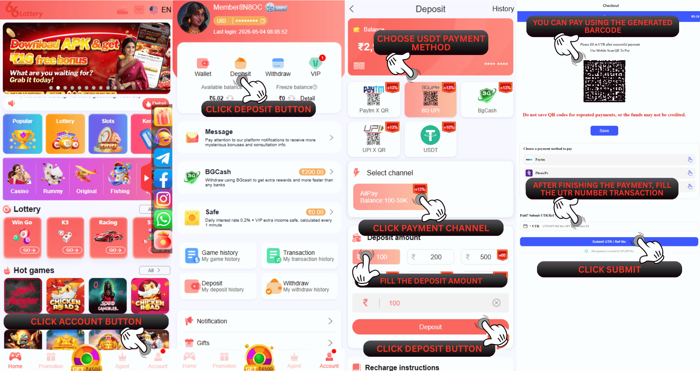
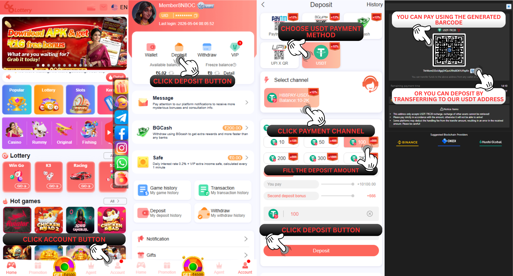

66 Lottery कैसे जमा करें
प्रश्न: मैं न्यूनतम कितनी राशि जमा कर सकता हूँ?
उत्तर: नमस्ते, हमारे पास एक जमा के लिए न्यूनतम सीमा 100 रुपये और एक जमा के लिए अधिकतम सीमा 50000 रुपये है। यूएसडीटी द्वारा न्यूनतम जमा राशि 10 यूएसडीटी है; 10 यूएसडीटी से कम की जमा राशि स्वीकार नहीं की जाएगी
66 Lottery UPI (Paytm PhonPe Gpay) बैंक, USDT, TRX एकाधिक रिचार्ज विधियाँ प्रदान करता है UPI (Paytm PhonPe Gpay) रिचार्ज विधि:
1. रिचार्ज करने के लिए क्लिक करें
2. UPIAPP रिचार्ज प्रकार चुनें
3. भुगतान चैनल चुनें
4. भुगतान पृष्ठ दर्ज करें (अपना यूपीआई खाता प्रकार चुनें और सीधे भुगतान के लिए अपने यूपीआईएपीपी को सक्रिय करने के लिए क्लिक करें)
अनुस्मारक: यूपीआई व्यक्तिगत जोखिम नियंत्रण कारणों के कारण, व्यक्तिगत भुगतान किए जाते हैं। इस चैनल के माध्यम से आपका भुगतान विफल हो जाएगा। आप भुगतान करने के लिए किसी अन्य चैनल को कई बार आज़मा सकते हैं! यह भी सुनिश्चित करें कि आप अपने यूपीआई खाते को सेव न करें और बार-बार ट्रांसफर न करें (जिससे धन की हानि होगी)। आपको ऑर्डर दोबारा शुरू करना होगा और हर बार रिचार्ज करने पर प्रक्रिया के अनुसार दोबारा भुगतान करना होगा!

USDT/TRX रिचार्ज विधि:
1. रिचार्ज पर क्लिक करें
2. यूएसडीटी/टीआरएक्स रिचार्ज प्रकार चुनें
3. वह USDT/TRX राशि दर्ज करें जिसे आप रिचार्ज करना चाहते हैं
4. भुगतान पृष्ठ दर्ज करें
5. ट्रांसफर और रिचार्ज करने के लिए पते को अपने वॉलेट में कॉपी करें (USDT/TRX रिचार्ज राशि 66 Lottery दिन के लेनदेन पर आधारित होगी। विनिमय दर का उपयोग रुपये की राशि को आपके 66 Lottery आईडी खाते में बदलने के लिए किया जाता है)
